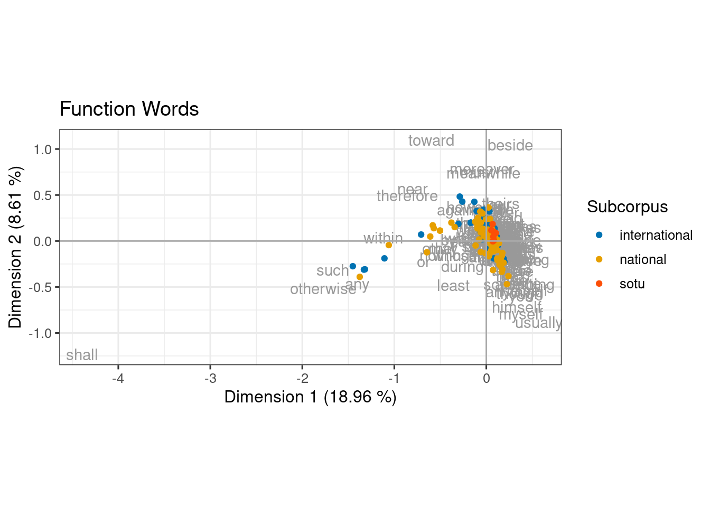

Obama Speech Correspondence Analysis
1 Introduction
Barack Obama, the 44th President of The United States, was well known for his memorable speeches. This paper analyzes about 130 of his speeches using the multivariate statistical technique known as correspondence analysis (CA) using the base R function ca (R Core Team 2021). CA is a dimension reduction technique which may also be used to view associations between categorical variables via biplots using ggplot2 (Wickham et al. 2022).
The speeches were separated into three topic categories: national, international and State of The Union (sotu). The two largest categories, by speech count, are national and international and reflect whether the main topic of the speech covers issues relating to national or international interests. The yearly State of The Union speech is a long speech summarizing the previous year and setting goals for the future and covers issues of both national and international issues. CA is investigated as a technique for differentiating between the various categories of speeches.
In this case it is expected that there will be overlap between the categories of speeches. For example, a speech about the United States military fighting terrorism in Afghanistan will cover both national and international issues. Speeches about global warming may talk about how national policy effects the environment at a global scale. Likewise, the State of The Union speeches cover a broad range of topics and it may be difficult to discern these from the other topic categories. This of course leads to a problem with this study and that is the categorization of the speeches. The national and international speeches were manually categorized, and required some subjective judgement.
Speeches were scraped from UC Santa Barbara’s The American Presidency Project Peters & Woolley (2021) using a Python program employing the BeautifulSoup package. Roughly 130 speeches were collected, as given by Barack Obama starting with his nomination for Democratic party candidate. Each file has one speech and is an un-annotated text file. The speeches have been separated into three directories, one each for national, international and State of The Union speeches. There are 80 national speeches, 44 international and seven State of The Union speeches.
Four different word lists were investigated ascertain which is most effective at differentiating between the speech types. First is a list of content words which is automatically populated after removing stop words from the speeches. Next, a manually defined list of content words which were selected from words generated by a Latent Dirichlet Allocation from a previous topic modeling study. Third, a list of function words, mostly prepositions and lastly a list of the most frequent bigrams.
2 Correspondence Analysis
Correspondence analysis (CA), is a statistical dimension reduction technique. Petrović et al. (2009) In reducing a data set with many dimensions down to only two dimensions, it is also useful for visualizing multivariate data on a 2-dimensional plot, or biplot. In this case, the data are comprised of documents, or speeches, as rows and the columns are words of interest. Four sets of words are investigated to determine if one set performs best at differentiating between speech topics. CA is similar to principle components analysis, which is another multivariate technique for dimension reduction of continuous data. CA is used for discrete data, such as counts in a contingency table. The contingency table is created, along with a word frequency list, functions from the mclm library (Speelman & Montes 2022). In this case the data are counts of words in speeches. CA explores whether the observed counts in the table are different than would be expected if the variables, speeches and words, were independent. A measurement of independence for the data is the Pearson Chi-square test. However, one condition for this test is that no more than 20% of the expected table values can be less than 5. With data, such as this, many observed counts are very low, as few of the words will have high counts in any particular speech. In the case of the automated content words using the stop list to remove common and trivial words, the percentage of cells with an expected value less than five is about 87%. Thus, the results of the Chi-square test may not be accurate. Greenacre (2010)
In CA, total inertia is a measurement of the variation observed in the contingency table. CA is computed using singular value decomposition on the contingency table, which returns eigenvalues and an eigenvector. The eigenvalues can be explained as the correlation between the two variables, in this case, speeches and words. The sum of the eigenvalues is the total inertia of the data. Thus, each dimension in the decomposition contributes to the total amount of inertia. When reducing the data to two dimensions for visualization, the more inertia that is explained by these two dimension, the better the total inertia of the data is explained.
A biplot is a plotting of two of the reduced dimensions as a scatter plot. Most usually, the first two dimensions, explaining the most inertia of any two dimensions are used, as to best represent the observed data. This data investigates speeches and words found in those speeches. The closer two speeches are to each other on the biplot, the more similar they are in terms of word usage. The closer two words are to each other on the biplot, the more speeches they have in common. And lastly, the closer a speech is to a word, the more often that words occurs in that speech than would be expected under independence.
Extensive use of tidyverse (Wickham 2022) for data wrangling and kableExtra (Zhu 2021) for pretty tables can be found throughout the paper. syuzhet (Jockers 2020) is used for sentiment analysis and ROCR (Sing et al. 2020)is used for ROC curve plots.
3 Biplots
I start this study by making four sets of biplots, one for each of the word sets:
The stop word list used to generate the content words, was downloaded from Kaggle and has about 700 words (Swami 2020). Figure 1 shows some reasonable separation, but not great, between the national and international speeches. As expected the State of The Union speeches are inter-mixed, leaning more towards national speeches.

Using function words as features, as shown in Figure 2, leads to more overlap between the two main categories of speeches. This method, in this case, leads to poor differentiating between the main issues of the speeches.
The topic modeling generated list of content words is looking to be quite promising at distinguishing the main speech topics on a correspondence analysis generated biplot, see Figure 3. The State of the Union speeches are firmly within the national speeches boundaries, but there is little overlap and thus good separation with the international speeches.
The top ten words most associated with national and international speeches, see Table 1, when using the content word list. These are the words with the greatest influence on determining whether a speech is on national or international issues.
| Naitonal | International |
|---|---|
| insurance | iranian |
| coverage | iran |
| medicare | weapon |
| affordable | nuclear |
| health | palestinian |
| care | sanctions |
| hello | israelis |
| republican | israel |
| pay | palestinians |
| democrat | palestine |
Looking at the various plots, it appears that using content words for features generates the first two dimensions with the greatest separation between national and international speeches. Perhaps, followed by the stop list generated list of words. This separation will be looked at more closely. As seen in Figure 4, separation between the topics using the most frequent bigrams is quite poor at distinguishing speech types. Perhaps, this is due to bigrams being very common phrases, such as “a lot” or “about the”, which will occur in both national and international speeches.
4 Sentiment Analysis
Sentiment analysis is briefly explored to determine if there is a pattern in the biplot data. Sentiment analysis, on a simple level, scores each word as having a negative to positive connotation. A completely negative word receives a score of -1, a postive word +1, and neutral words are around 0. The score for a whole document or speech is an average of all the individual scores in that document. The speeches on the biplot are then colored according to that speech’s sentiment. The get_sentiment function from the syuzhet library scores on a sentence by sentence basis, taking context into account, such as negations and sarcasm (Jockers 2020). Of course, a look into sentiment analysis could be a whole paper itself, and is thus only briefly considered here.
4.1 Look at speeches with extreme sentiment values
There is one speech with a sentiment score greater than 2.5. Statement3n has a score of 3.24, by far the highest score. Statement3n is concerning a ruling by the Supreme Court which holds “that state regulation of abortion may not place an “undue burden” on women exercising their right to an abortion,” in which Obama compliments the courts decision.
There are two speeches with scores less than -0.2, statement23i with a score of -0.275 and statement32n with a score of -0.336. Statement32n is a comment about a law for fair sentencing of drug users and statement23i and how some people were unfairly sentenced using old and unjust laws. Statement23i is a condemnation of the shooting at Charlie Hebdo magazine offices in Paris.
From the first plot, see Figure 5, there does not appear to be a pattern in the sentiment scores of Obama speeches. The scoring seems to be fairly random. The second plot, Figure 6, shows words, in one case such as “war” near a low sentiment speech, however this is not always the case. Another speech with a negative score has the words “audience” and “everybody” nearby, neither of which are negative words on their own, without looking at context.
| Subcorpus | avg_sentiment |
|---|---|
| international | 0.687 |
| national | 0.733 |
| sotu | 0.524 |
Table 2 shows the average sentiment score by sub-corpus. Even though no pattern was visible on the biplot, the table shows some variation in sentiment in each of the sub-corpora.
5 Distance
In trying to determine which method, of the four, is best for differentiating between national and international speeches, I first look at the distance between the centroids for each type of speech. This however, does not say anything about variance or overlap, that is, say, national speeches in an area which is mostly international.
Using the topic modeling generated content word speeches for correspondence analysis leads to the largest distance between the centroids for national and international speeches, as seen in Figure 7, followed closely by the stop list generated content word list. Using a content word list, of some sort, would seem to be leading the methods at differentiating between speech topics.
6 Inertia
As mentioned earlier, inertia is similar to variance explained in principle components analysis. The first two components of the correspondence analysis output using the function word list results in the most inertia explained at 27.6%, see Table 3. Thus, if the goal was to recreate as much inertia of the observed data in only two dimensions, the function word list should be used. This doesn’t, however, say anything about the goodness of the differentiating power of each method.
| id | dim | value | percent | cum_percent |
|---|---|---|---|---|
| sl.s | 1 | 0.218 | 13.22 | 13.2 |
| sl.s | 2 | 0.140 | 8.45 | 21.7 |
| cw.s | 1 | 0.388 | 11.33 | 11.3 |
| cw.s | 2 | 0.296 | 8.64 | 20.0 |
| fw.s | 1 | 0.068 | 18.96 | 19.0 |
| fw.s | 2 | 0.031 | 8.61 | 27.6 |
| bi.s | 1 | 0.219 | 16.75 | 16.7 |
| bi.s | 2 | 0.122 | 9.36 | 26.1 |
7 Logistic Regression
I decided to use logistic regression as a means to determine which method was best at separating nationally themed speeches from international ones. The reasoning being, there must be some separation to be able to accurately predict the topic using logistic regression. If the topics were completely interspersed it would be quite difficult to predict which topic a speech is. I regressed the observed topic on V1 and V2, the first two components from the correspondence analysis, leaving out State of The Union speeches. I then predicted the topic for each of the four methods, and used the ROC curve to find the optimal threshold to convert the logistic probability into a categorical variable. Lee (2020) This method sets the threshold of the probability to the value at which the ROC curve is closest to the (0,1) point, see Figure 8. The ROC curve function comes from the R library ROCR (Sing et al. 2020). The total number of correctly predicted topics was summed and an overall percentage found for each method. Doing this, I found that the topic modeling generated content word list was best at predicting the topic at 90.3%, as shown in Table 4 and is thus would be the best for differentiating between national and international speeches.
| Method | Percent Correct |
|---|---|
| Content Words | 0.903 |
| Function Words | 0.718 |
| Stop List | 0.855 |
| Bigrams | 0.774 |
8 Conclusion
Correspondence Analysis was investigated as a technique for determining the topic of a corpus of Barack Obama speeches. Four different word lists were used as features for the analysis and the results analyzed with logistic regression. The word list based on a previous topic modeling to generate content words yielded the best results for separating the categories of speeches on a two dimensional plane.